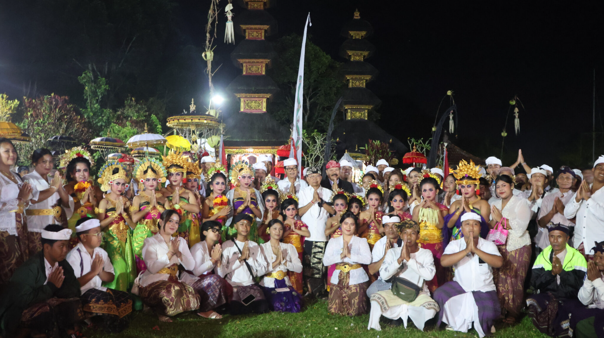
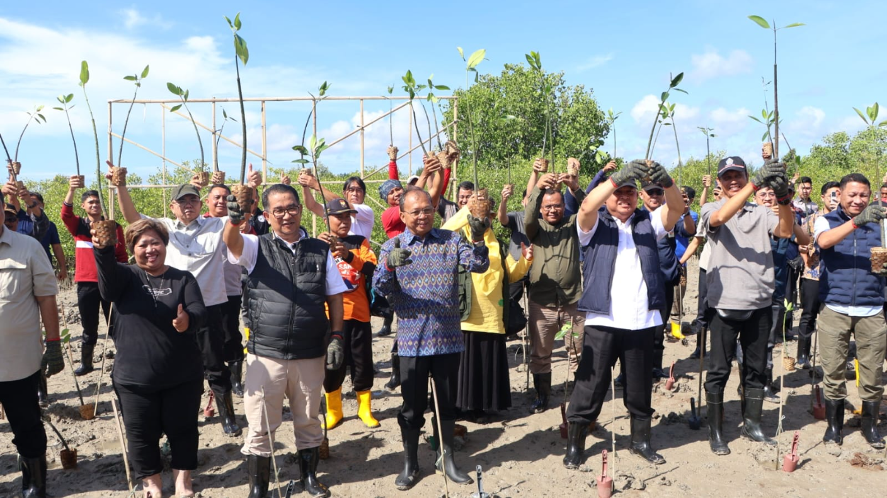

Menyajikan Informasi Umum Pemerintah Kota Bali
Nangun Sat Kerthi Loka Bali melalui Pola Pembangunan Semesta Berencana menuju Bali era Baru
“Menjaga kesucian dan keharmonisan alam Bali beserta isinya, untuk mewujudkan kehidupan masyarakat Bali yang sejahtera dan bahagia, berdasarkan nilai-nilai Pancasila dan prinsip Trisakti.”
9 April 2026

10 April 2026

10 April 2026
Jl. Basuki Rahmat No. 1 Renon Denpasar – Bali
(0361) 224671
Email: ppid@baliprov.go.id
Facebook: @PemprovBali